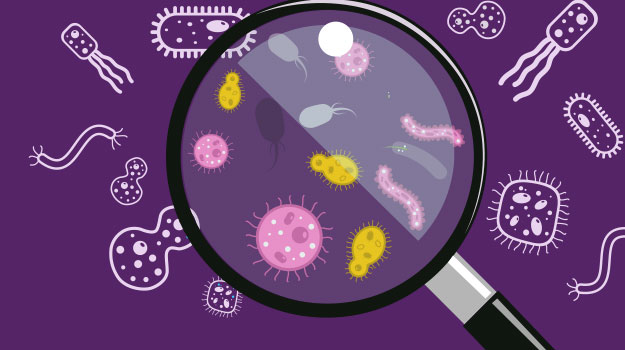
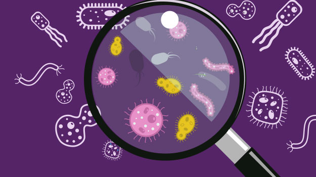

John Doe
Currently an undergraduate studying Biochemistry (Chemistry Emphasis) at UCR. I've taken part in research labs such as Microbiology Lab @ LLU and Porter Group, but am still trying to my career goals. Definitely, I strive to make a positive impact on the Earth and pass on many ideas onto the next generation of scientists.
As a student researcher for UCR's Dynamic Genome, I learned how to micropipette with precision and learned how to extract solutions with the proper technique. I was able to create a mutation in specific amino acids of a gene using site-directed mutagenesis. One of my highlights as a student ersearcher was performing PCR and through gel electrophoresis, transformed bacterial-mutated DNA. I also became familiar with NIH's Nucleotide Blast website, which was used to analyze DNA sequences, comparing normal to mutated DNA sequences | In my time as a student researching for Dr. Sean Wilson at LLU, I was tasked to view microscopic images of fetal and adult sheep muscle cells. I investigated Ca2+ signaling in their cells in hypoxic and normoxic conditions. Doing so, I collected certain variables provided within the software and organized those data values into Microsoft Excel. These data values would then be modeled and statitically analzyzed under 3D raphs through Graphpad Prism. |
I found myself interested in environmental sciences, leading me to join the Porter Group at UCR. I began with a practice project on how Covid-19 lockdown impacted emissions and pollution levels in Los Angeles. Using the U.S. EPA's air quality data, I was able to present the statistical data using graphs and performed statistical tests to find correlation between multiple variables. In a weekly basis, I met with the lead Professor and team members to share updates on my research progress and present new findings.
Experience
Undergraduate Environmental Researcher
• Researching on how the COVID-19 lockdown impacts emissions and pollution levels in Los Angeles
• Exploring U.S. EPA Yearly Air Quality Particulates and Gases for self-led research project
• Utilizing R Studio to represent statistical data using graphs and performing statistical tests to find correlation between different data sets
• Attending bi-weekly meetings to share updates on research progress and presenting new findings to Lead Professor and team members
UCR Dynamic Genome Student Researcher
• Micropipetted in order to accurately measure and extract solutions
• Created a mutation in specific amino acids of a gene using site-directed mutagenesis
• Performed Polymerase Chain Reactions and transformed bacterial-mutated DNA by gel electrophoresis
• Analyzed DNA sequences through NIH’s Nucleotide BLAST, comparing normal to mutated Arabidopsis
Microbiology Research Intern
• Investigated Ca2+ signaling in fetal and adult sheep lungs in hypoxic and normoxic conditions
• Microscopically imaged and examined sheep lungs, determining Ca2+ signaling within muscle cells
• Collected and organized various data into Microsoft Excel
• Modeled and statistically analyzed 3D graphs through GraphPad Prism
Education
University of California Riverside
Diamond Bar High School
Portfolio


